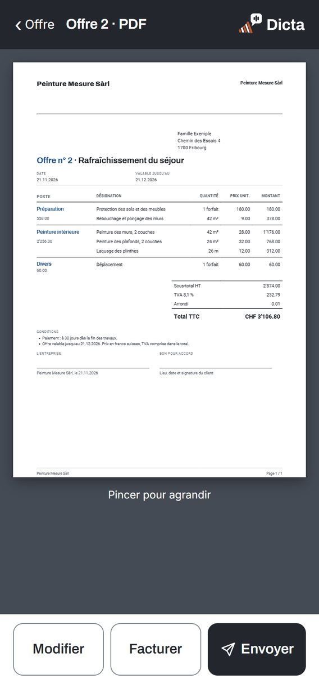
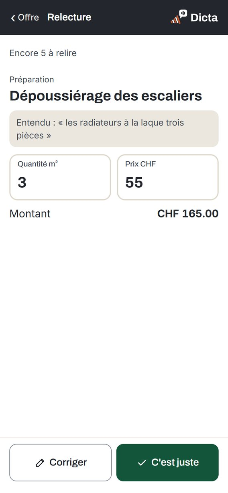
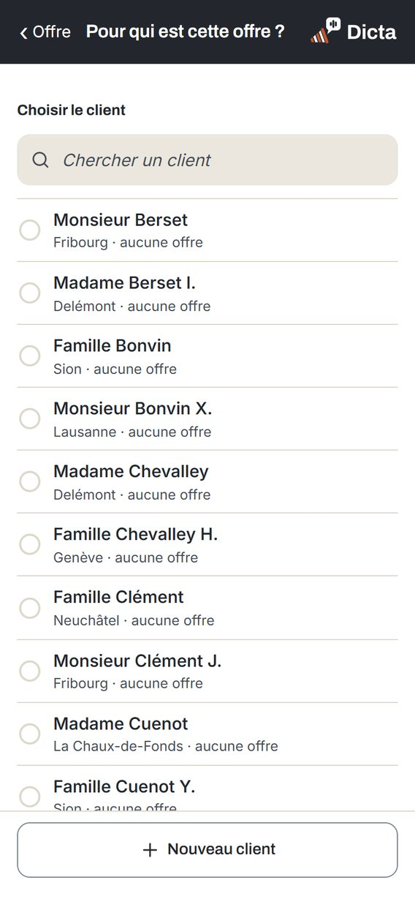

Parcours de la dictée, version 2
Vos réponses du 26.11 sont rangées. Il reste deux choses à trancher : l'attente « entre A et B », et la règle d'arrivée sur le PDF que vous proposez.
Déjà réglé (vos réponses du 26.11)
- Enregistrement : piste B. Plein écran sombre, onde de la voix, conseils, arrêt au centre.
- Alerte après 5 secondes de silence : oui.
- Pause pendant la dictée : oui. À prouver sur votre iPhone, je ne peux pas le faire d'ici.
- Texte entendu pendant l'attente : non (« pas obliger »).
- Offre prête : piste B, sans le prix, puis l'offre s'ouvre directement avec son petit menu.
Arriver directement sur le PDF : mon avis
Oui, avec une règle écrite. Le PDF est ce que l'artisan vend : y arriver sans toucher supprime la page des lignes et le bouton « Générer l'offre ». L'écran du PDF porte déjà le petit menu (Modifier, Facturer, Envoyer).
« Sans erreur » veut dire deux choses dans le code d'aujourd'hui : aucune ligne « à vérifier », et un client rattaché (le nom dicté ressemble à plus de 80 % à une fiche existante, règle du 12.11). Pour un nouveau client, la question « Pour qui est cette offre ? » reste : sans elle, le PDF sortirait sans adresse.
Compté le 26.11 en lecture seule. Ces chiffres sont l'état actuel, relecture et choix du client compris : à la naissance de l'offre, la part « tout est propre » est donc de la moitié au plus. L'arrivée directe ne servira pas à chaque dictée.
Le risque : une ligne sans marque « à vérifier » peut quand même être fausse (une quantité mal entendue). Sur le PDF, l'artisan lit son offre comme son client la lira, c'est une bonne relecture ; « Envoyer » reste un geste voulu (le partage du téléphone) et « Modifier » est à côté. Je n'irais pas plus loin : jamais d'envoi sans ce geste.
Pour simplifier encore, une seule règle : dès que l'offre est propre, on est sur le PDF. Elle vaut à trois moments, montrés plus bas : à la fin de la dictée, après la dernière ligne relue, et après le choix du client. L'écran « Offre prête » ne se montre que s'il reste des lignes à vérifier.
Démo : le parcours entier
Choisissez un cas, touchez le micro, puis l'arrêt rouge. Voix simulée ; attente raccourcie à 10 secondes (30 à 50 en vrai). Les écrans du PDF, de la relecture et du client sont des captures de l'application : touchez-les pour avancer.
Ce que la dictée a donné
Pendant l'enregistrement
À trancher 1 : l'attente, entre A et B
De B : le plein écran sombre, à la suite de l'enregistrement, et l'anneau qui se remplit avec la durée restante. De A : les trois étapes nommées, sans texte entendu ni lignes qui se dessinent. « Offre prête » n'est plus une étape.
Cette attente vous convient ?
À trancher 2 : l'arrivée
Cas 1 : tout est propre
Aucune ligne à vérifier, client reconnu : le PDF s'ouvre tout seul. Aucun toucher entre « Terminer » et le PDF (deux aujourd'hui : la page des lignes, puis « Générer l'offre »).

Cas 2 : des lignes à vérifier
L'écran « Offre prête » dit combien, sans le prix. Un toucher mène à la relecture ; la dernière ligne validée, le PDF s'ouvre (aujourd'hui : un écran « Générer l'offre » de plus).

Cas 3 : lignes propres, client à confirmer
Le nom dicté ne correspond à aucune fiche (nouveau client, le cas courant). Je propose d'ouvrir tout de suite « Pour qui est cette offre ? » ; le client choisi ou créé, le PDF s'ouvre.

La règle : dès que l'offre est propre (aucune ligne à vérifier, client rattaché), le PDF s'ouvre
Cas 3 : où arriver quand il ne manque que le client ?
Cas 2 : après la dernière ligne relue
« Ne pas afficher le prix » : j'ai compris « sur l'écran Offre prête ». C'est bien cela ?
Le PDF et la page de l'offre gardent leurs totaux. Si vous vouliez dire autre chose (le bouton « Relire 5 lignes, CHF … », la liste des offres), écrivez-le.
Ce que cela coûte (estimation de Claude)
| Lot | Travail | Ce qui change |
|---|---|---|
| Attente entre A et B | Environ 1 h 30 | Le navigateur seulement. |
| Arrivée : règle « offre propre, PDF » et écran « Offre prête » | Environ 2 h 30 | Le serveur dit où arriver (PDF, relecture ou client) ; la fin de la relecture et le choix du client mènent au PDF. |
| Enregistrement B, alerte de silence, pause | Environ 4 h 30 | Le navigateur ; la pause touche la durée, la limite des 30 minutes et la reprise d'une dictée coupée. |
Vos réponses
Elles restent dans ce navigateur. Le bouton copie le texte à coller dans la conversation.